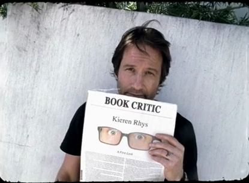

100 Books to Blog About

For a long time I have been trying to accomplish two things. 1. Write a blog, and 2. Read the classics. Both I really want to do.
I have tried blogging before, many times, but I couldn’t blog because I never found the right topic to blog about. Something I’ll always be passionate about, and not run out of ideas to write.
Reading the classics is what I have struggled to do for years, but recently my attention span has decided to go size zero. I begin to read, and after reading some twenty pages, I get distracted and postpone my literary endeavour. I haven’t finished Dickens’ David Copperfield or Jane Austen’s Pride and Prejudice even after several attempts (Thanks to my obsession with fresh starts and not so perfect memory, I always start from the beginning.).
Then one day I found a solution for both my problems, like Dr. House’s sudden strokes of genius, I had my own; I was watching October Sky and I liked how the hero goes after his dreams even after his father’s strong disapproval, so I thought I should write about it and share my observations with others. Then I realised I could do the same things with books. That’s called killing two zombies with one headshot. I will blog about books. (And occasionally about movies.)
In my blog I will write about books. Not just review them, but talk about them, the philosophies and how they are relevant to our lives.
I will start with New York Times’ list of best 100 novels. Even those which I have read already. Won’t hurt to read Lolita again.
I am reading To Kill a Mockingbird right now. It’s not on the list, and I don’t know why it isn’t, but it’s my favorite book, so I’ll do it anyway.
Stay tuned!